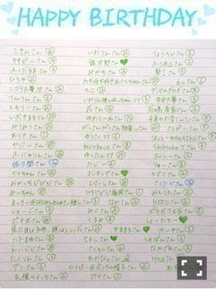
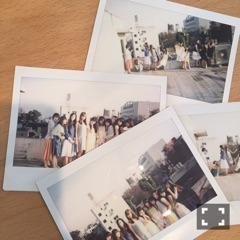

| 2016/02 09 Tue | 人生にいrおdおrいを_(．．*)vo l.65 |
みなさんこんばんはー！
さがらいおりです！
昨日ひなぴょんと大好きな
アカシックさんのライブ行ってきました♡
全曲新曲ライブで
すごい楽しかったー♪♪
一足先にアルバムを頂けたので
さっそく今日から聴いてます♡
アカシックさんの曲大好き♡
理姫さんも大好き♡
Tシャツ買えばよかったー(；；)
そして今日は安室奈美恵さんの
グッズを買いに幕張メッセまで！
チケットは持ってなかったから
グッズ買って帰りました(__)
でもコップのフチのアムロ2を
コンプリートできたのはこの上ない喜び
帰り道誰かに喜びを伝えたくて
かりんちゃんに電話しちゃったの、
でも一緒に喜んでくれて♡
2日連続で幸せをありがとうです♡♡
松村さん♡
あ、松村さんに聞きたいことあったんだ！
今度会ったとき聞いてみよ、
~いおり庵~
 安室ちゃんの曲で1番泣いた曲は？
安室ちゃんの曲で1番泣いた曲は？
BRIGHTER DAYのカップリングの
Still Lovin' Youかな
一昨年の生誕祭でもこの曲を流してくださって
その時に嬉しすぎて
号泣したの、(๑¯ω¯๑)
いおりちゃんは目玉焼きに何かけます？
塩コショウだよー！
しょうゆとかソースとか
かけたことない(*_*)
美味しいの？
ショートヘアーにした事ある？
小学校3、4年生くらいは
ショートだった気が、、
あと中2の時も先生に言われて
肩上くらいまで切ったよ！
私はロングが好き
お誕生日おめでとうございます♡

また2月お誕生日の方は教えてね(^^)
素敵な1年になりますように...♡
今週の乃木中見ていただけましたか？？
飛鳥ちゃん、、(；；)
でも白石さんに告白できてよかった♡
真夏さんも万理華さんも手を挙げてくれて
すごい嬉しかった♪♪
引き続き来週も
観てくださいねー(^o^)/
 月刊ザテレビジョン 発売中
楽天SHOWTIME 乃木坂ゴルフ倶楽部
BRODY 2/22 発売
B.L.T. 2/24 発売
月刊ザテレビジョン 発売中
楽天SHOWTIME 乃木坂ゴルフ倶楽部
BRODY 2/22 発売
B.L.T. 2/24 発売
この前、二期生10人で撮影して頂きました！

最近は二期生で出させて頂く雑誌が増えて
本当に有難いなーと思ってます＞＜
お楽しみ♪♪
GREEN GORAvol.2 3/16 発売
ミドリのゴルフウェア可愛いー♡
今度握手会でゴルフウェア着たいー！！
よろしくお願いしますm(_ _)m
タイトルはなんと読むでしょ～か？
i o r i .

コメント(440)
2016/02/09 21:12